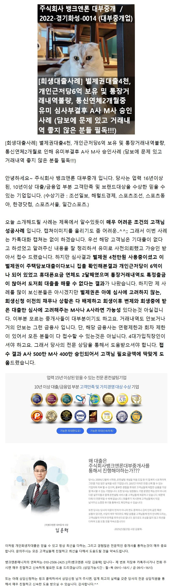
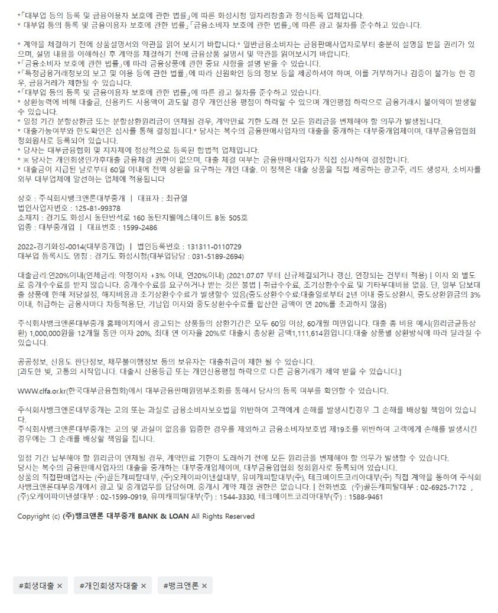

[필독!!회생대출사례] 별제권대출4천, 개인근저당6억 보유 및 통장거래내역불량, 통신연체2개월로 인해 유미부결후 A사 M사 승인사례 (담보에 문제 있고 거래내역 좋지 않은 분들 필독!!!)

상담신청 -> https://cafe.naver.com/cityman88/29497
뱅크앤론의 개인회생자대출이 좋은이유

https://cafe.naver.com/cityman88/309588

상담신청 -> https://cafe.naver.com/cityman88/29497
뱅크앤론의 개인회생자대출이 좋은이유
